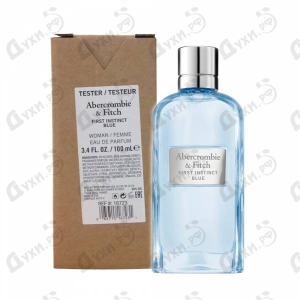

Полное описание:

Упакованный в стиль, аккуратный, элегантный флакон нежно-голубого оттенка, аромат Abercrombie & Fitch Fitch First Instinct Blue For Her отличается невероятной свежестью и благородным, шипровым звучанием. Каждая его капля словно рассказывает о добродушном, милом характере его обладательницы, подчеркивает ее открытость всему миру и неизменно позитивный жизненный настрой. Презентация новинки состоялась в 2018 году, и уже через несколько месяцев эликсир украсил полки сотен утонченных, женственных представительниц прекрасной половины человечества из разных уголков земного шара. Парфюмерный треугольник открывается ягодными мотивами спелой, сочной ежевики, которая изумительно сочетается с цитрусовой свежестью зеленого бергамота. Каменная соль, растворенная в воздушных нотах, подчеркивает особенную характерность и смелость запаха. Сердце пирамиды представлено цветочными мотивами белоснежного жасмина, чье чарующее благоухание как нельзя лучше оттеняется фруктовыми аккордами спелого абрикоса. Душистый пион плавно перетекает в базу композиции, где соединяется с классическими, древесными акцентами восточного сандала. Легкая горчинка смолистых пачулей составляет идеальный дуэт со сладкой ванилью, завершая невероятную картину. Аромат Abercrombie & Fitch Fitch First Instinct Blue For Her будет прекрасно смотреться в лучах солнечного света.